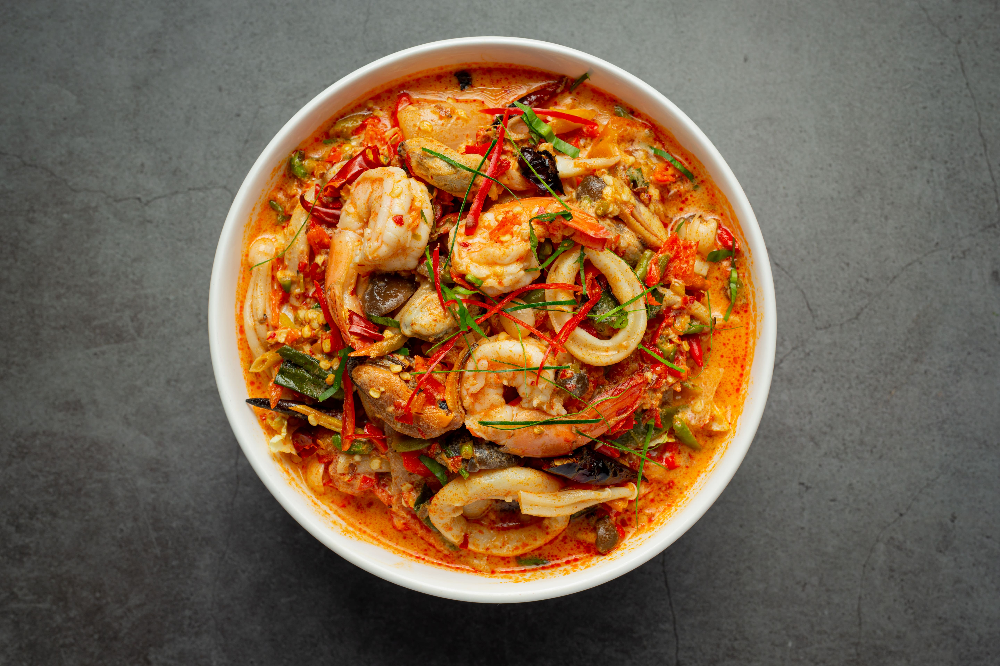

Tom Yum Goong

Spicy, Sour, and Shrimply Irresistible
Tom Yum Goong is a hot and sour Thai soup known for its bold and complex flavors.
It features shrimp and mushrooms in a fragrant broth seasoned with lemongrass, lime leaves, and galangal, making it both aromatic and invigorating.
Ingredients
- 1 lb shrimp, peeled and deveined
- 4 cups chicken or vegetable broth
- 1 stalk lemongrass, cut into 2-inch pieces
- 3 kaffir lime leaves
- 3 slices galangal
- 2 Thai chilies, sliced
- 1 cup mushrooms, sliced
- 2 tbsp fish sauce
- 1 tbsp lime juice
- 1 tsp sugar
- Fresh cilantro for garnish
Directions
- Bring the broth to a boil and add lemongrass, galangal, lime leaves, and chilies.
- Simmer for 5 minutes to infuse the flavors.
- Add mushrooms and shrimp, cooking until the shrimp turns pink.
- Season with fish sauce, lime juice, and sugar.
- Garnish with fresh cilantro.
- Serve hot as a starter or with rice for a more filling meal.
Return to recipes page